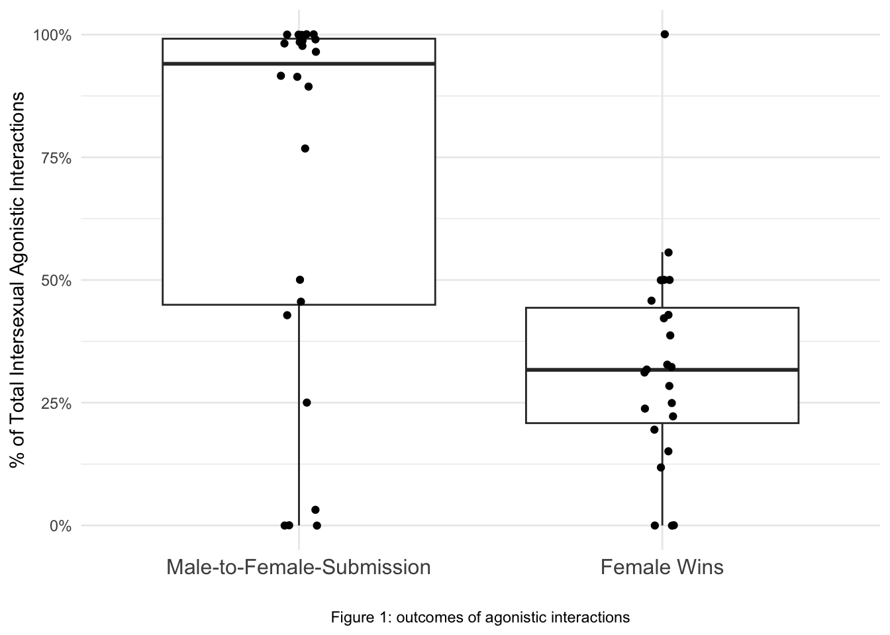
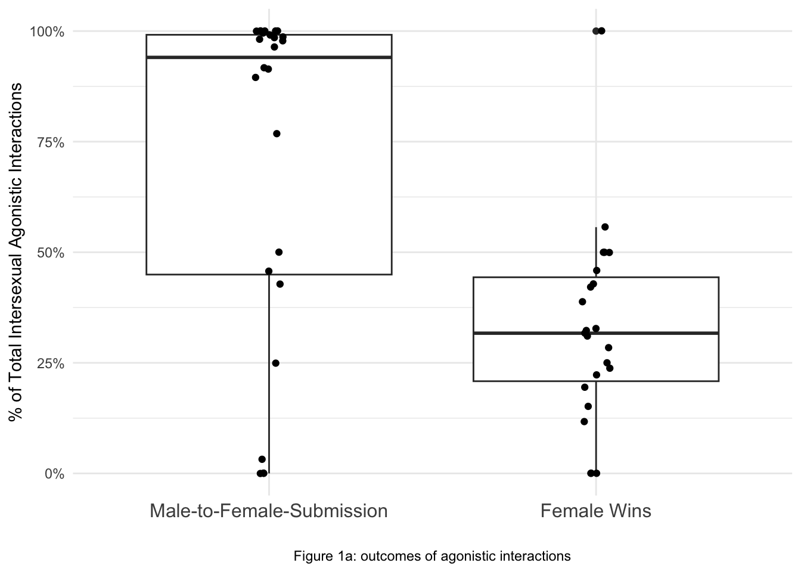

library(dplyr)
library(tidyverse)
library(readxl)
library(brms)
library(bayestestR)
library(sjstats)
library(Rcpp)
library(rstanarm)
library(broom.mixed)Data-analysis-replication
Data analysis replication
Paper citation
Lewis, R. J., Bueno, G. L., & Di Fiore, A. (2022). Variation in female leverage: The influence of kinship and market effects on the extent of female power over males in verreaux’s sifaka. Frontiers in Ecology and Evolution, 10, 851880. https://doi.org/10.3389/fevo.2022.851880
Paper outline
Research goal:
The goal of the research is to examine how female economic power (leverage) in Verreaux’s sifaka varies with the value of mating opportunities. Specifically, the study tests whether indicators of mating opportunity value, such as a female’s kinship status with males, female parity status, reproductive season, and demographic aspects like the sex ratio within groups or populations, predict the extent to which females can influence male behavior during intersexual agonistic interactions.
Data sets:
The data used in this study was collected over more than a decade (2008–2019) in a population of Verreaux’s sifaka. Data from 2009 to 2010 was excluded in the analysis due to insufficiency caused by Cyclone Fanele. The final data incorporates approximately 14,000 hours of focal animal sampling across 10 social groups, during which detailed records of agonistic interactions were gathered, including both aggressive behaviors and submissive vocalizations. Complementing the behavioral data, monthly censuses provided demographic information such as group composition and sex ratios. Additionally, genetic analyses using 14 microsatellite markers from both fecal and tissue samples enabled precise determination of kinship among individuals.
The authors provided two datasheets for public access. The first datasheet has observations of submissive chatter behavior between females and males, while the second one records each outcome of every agonistic intersexual interaction. Both datasheets include data on adult and subadult individals. The link to the repository is: https://datadryad.org/dataset/doi:10.5061/dryad.ngf1vhhwh
Statistical analysis:
Replication outline:
Statistical description on submissive chatters and agonistic interaction outcomes.
Visualization of the outcomes of agonistic interactions in intersexual Verreaux’s sifaka dyads.
GLMMs on the effects of economic factors on the direction of submissive chatters. There are 2 models in total.
GLMMs on the effects of economic factors on the outcomes of agonistic interactions (male win vs. female win or neutral). There are 4 models in total.
Analysis replication:
library packages
load in data sets
There are two data sets used in the replication. Chatter: it contains the direction of submissive chatter between dyads. Win: it contains the outcomes of agonistic interactions between dyads.
chatter <- read_xlsx("LewisEtAl2022_SubmissiveChatter_Dryad.xlsx", sheet = 2)
head(chatter)# A tibble: 6 × 21
Date Year Season Initiator Receiver InitiatorSex
<dttm> <dbl> <chr> <chr> <chr> <chr>
1 2008-01-19 00:00:00 2008 matingSeason M28 F01 M
2 2008-01-19 00:00:00 2008 matingSeason M28 F01 M
3 2008-01-25 00:00:00 2008 matingSeason M28 F01 M
4 2008-01-25 00:00:00 2008 matingSeason M28 F01 M
5 2008-01-30 00:00:00 2008 matingSeason M28 F01 M
6 2008-01-30 00:00:00 2008 matingSeason M28 F01 M
# ℹ 15 more variables: InitiatorAgeClass <chr>, ReceiverSex <chr>,
# ReceiverAgeClass <chr>, MaleSubmitToFemale <dbl>, MaleID <chr>,
# FemaleID <chr>, MaleAgeClass <chr>, FemaleAgeClass <chr>,
# FemaleReproductiveStatus <chr>, Relatedness <dbl>,
# PopSexRatioFOverN_AdultsOnly <chr>,
# GroupSexRatioFOverGroupN_AdultsOnly <chr>,
# PopSexRatioFOverN_SubsAndAdults <dbl>, …win <- read_xlsx("LewisEtAl2022_WinsData_Dryad.xlsx", sheet=1)
head(win)# A tibble: 6 × 25
Date Year Season Initiator Receiver Behavior InitiatorSex
<dttm> <dbl> <chr> <chr> <chr> <chr> <chr>
1 2017-06-11 00:00:00 2017 nonMatingS… F17 M24 Supplant F
2 2017-06-11 00:00:00 2017 nonMatingS… F17 M24 Supplant F
3 2017-06-11 00:00:00 2017 nonMatingS… F17 M24 Supplant F
4 2017-07-11 00:00:00 2017 nonMatingS… F17 M24 Supplant F
5 2017-07-11 00:00:00 2017 nonMatingS… F17 M24 Supplant F
6 2017-07-11 00:00:00 2017 nonMatingS… F17 M24 Supplant F
# ℹ 18 more variables: InitiatorAgeClass <chr>, ReceiverSex <chr>,
# ReceiverAgeClass <chr>, BoutID <chr>, DidAnyoneWin1v0 <dbl>,
# DidMaleWinWithNeutral <dbl>, DidMaleWinWithoutNeutral <chr>, MaleID <chr>,
# FemaleID <chr>, MaleAgeClass <chr>, FemaleAgeClass <chr>,
# FemaleReproductiveStatus <chr>, Relatedness <dbl>,
# PopSexRatioFOverN_AdultsOnly <chr>,
# GroupSexRatioFOverGroupN_AdultsOnly <chr>, …Statistical description
1. Summary for Chatter
The table includes: the number of observations, number of individuals, number of adults, number of subadults, number of females (and females in both age classes), number of males (and males in both age classes), number of dyads, number of related dyads, number of unrelated dyads.
summary_chatter <- chatter %>%
summarise(n_obs = n(),
unique_adults = n_distinct(c(Initiator[InitiatorAgeClass == "adult"], Receiver[ReceiverAgeClass == "adult"])),
unique_subadults = n_distinct(c(Initiator[InitiatorAgeClass == "subadult"], Receiver[ReceiverAgeClass == "subadult"])),
unique_individuals = n_distinct(c(Initiator, Receiver)),
females_in_both_age_classes = n_distinct(
intersect(
c(Initiator[InitiatorAgeClass == "adult"&InitiatorSex == "F"], Receiver[ReceiverAgeClass == "adult"&ReceiverSex == "F"]),
c(Initiator[InitiatorAgeClass == "subadult"&InitiatorSex == "F"], Receiver[ReceiverAgeClass == "subadult"&ReceiverSex == "F"])
)),
males_in_both_age_classes = n_distinct(
intersect(
c(Initiator[InitiatorAgeClass == "adult"&InitiatorSex == "M"], Receiver[ReceiverAgeClass == "adult"&ReceiverSex == "M"]),
c(Initiator[InitiatorAgeClass == "subadult"&InitiatorSex == "M"], Receiver[ReceiverAgeClass == "subadult"&ReceiverSex == "M"])
)),
unique_females = n_distinct(c(Initiator[InitiatorSex == "F"], Receiver[ReceiverSex == "F"])),
unique_males = n_distinct(c(Initiator[InitiatorSex == "M"], Receiver[ReceiverSex == "M"])),
unique_dyads = n_distinct(paste(pmin(Initiator, Receiver), pmax(Initiator, Receiver))),
dyad_related = n_distinct(paste(pmin(Initiator, Receiver), pmax(Initiator, Receiver))[Relatedness == 1]),
dyad_unrelated = n_distinct(paste(pmin(Initiator, Receiver), pmax(Initiator, Receiver))[Relatedness == 0])
) %>%
pivot_longer(
cols = everything(),
names_to = "variable",
values_to = "value"
)
print(summary_chatter)# A tibble: 11 × 2
variable value
<chr> <int>
1 n_obs 1899
2 unique_adults 37
3 unique_subadults 31
4 unique_individuals 52
5 females_in_both_age_classes 6
6 males_in_both_age_classes 10
7 unique_females 24
8 unique_males 28
9 unique_dyads 72
10 dyad_related 22
11 dyad_unrelated 502. Summary for Win
The table includes: the number of observations, number of individuals, number of adults, number of subadults, number of females (and females in both age classes), number of males (and males in both age classes), number of dyads, number of related dyads, number of unrelated dyads, number of observations when male wins, number of observations when female wins or the result is neutural.
summary_win <- win %>%
summarise(n_obs = n(),
unique_adults = n_distinct(c(Initiator[InitiatorAgeClass == "adult"], Receiver[ReceiverAgeClass == "adult"])),
unique_subadults = n_distinct(c(Initiator[InitiatorAgeClass == "subadult"], Receiver[ReceiverAgeClass == "subadult"])),
unique_individuals = n_distinct(c(Initiator, Receiver)),
females_in_both_age_classes = n_distinct(
intersect(
c(Initiator[InitiatorAgeClass == "adult"&InitiatorSex == "F"], Receiver[ReceiverAgeClass == "adult"&ReceiverSex == "F"]),
c(Initiator[InitiatorAgeClass == "subadult"&InitiatorSex == "F"], Receiver[ReceiverAgeClass == "subadult"&ReceiverSex == "F"])
)),
males_in_both_age_classes = n_distinct(
intersect(
c(Initiator[InitiatorAgeClass == "adult"&InitiatorSex == "M"], Receiver[ReceiverAgeClass == "adult"&ReceiverSex == "M"]),
c(Initiator[InitiatorAgeClass == "subadult"&InitiatorSex == "M"], Receiver[ReceiverAgeClass == "subadult"&ReceiverSex == "M"])
)),
unique_females = n_distinct(c(Initiator[InitiatorSex == "F"], Receiver[ReceiverSex == "F"])),
unique_males = n_distinct(c(Initiator[InitiatorSex == "M"], Receiver[ReceiverSex == "M"])),
unique_dyads = n_distinct(paste(pmin(Initiator, Receiver), pmax(Initiator, Receiver))),
dyad_related = n_distinct(paste(pmin(Initiator, Receiver), pmax(Initiator, Receiver))[Relatedness == 1]),
dyad_unrelated = n_distinct(paste(pmin(Initiator, Receiver), pmax(Initiator, Receiver))[Relatedness == 0]),
n_malewin = nrow(win %>% filter(DidMaleWinWithNeutral == "1")),
n_femalewin_or_neutural = nrow(win %>% filter(DidMaleWinWithNeutral == "0"))
) %>%
pivot_longer(
cols = everything(),
names_to = "variable",
values_to = "value"
)
print(summary_win)# A tibble: 13 × 2
variable value
<chr> <int>
1 n_obs 2448
2 unique_adults 37
3 unique_subadults 30
4 unique_individuals 49
5 females_in_both_age_classes 8
6 males_in_both_age_classes 10
7 unique_females 23
8 unique_males 26
9 unique_dyads 74
10 dyad_related 20
11 dyad_unrelated 54
12 n_malewin 956
13 n_femalewin_or_neutural 14923. Boxplot for outcomes of agonistic interactions in intersexual Verreaux’s sifaka dyads (for adults and subadults)
chatter_adult <- chatter %>%
filter(InitiatorAgeClass=="adult" & ReceiverAgeClass=="adult") %>%
filter(!is.na(Relatedness))
submission_percentage <- chatter %>%
group_by(FemaleID) %>%
summarise(
male_to_female_submission = sum(MaleSubmitToFemale=="1"),
total_chatter = n(),
submission_percent = (male_to_female_submission / total_chatter) * 100
)
win_percentage <- win %>%
group_by(FemaleID) %>%
summarise(
female_wins = sum(DidMaleWinWithoutNeutral=="0"),
total_wins = n(),
win_percent = (female_wins / total_wins) * 100
)
chatter_win <- full_join(submission_percentage %>% select(FemaleID, submission_percent), win_percentage %>% select(FemaleID, win_percent), by="FemaleID")
chatter_win_long <- chatter_win %>%
select(FemaleID, submission_percent, win_percent) %>%
pivot_longer(cols = c(submission_percent, win_percent),
names_to = "label",
values_to = "value") %>%
filter(!is.na(value))
# write labels for the plot
chatter_win_long <- chatter_win_long %>%
mutate(label = case_when(
label == "submission_percent" ~ "Male-to-Female-Submission",
label == "win_percent" ~ "Female Wins"
))
# create boxplot
ggplot(chatter_win_long, aes(x = label, y = value)) +
geom_boxplot(outlier.shape = NA) +
geom_jitter(width = 0.05) +
theme_minimal() +
labs(
x = "",
y = "% of Total Intersexual Agonistic Interactions",
caption = "Figure 1: outcomes of agonistic interactions"
) +
scale_y_continuous(labels = scales::percent_format(scale = 1)) +
scale_x_discrete(limits = c("Male-to-Female-Submission", "Female Wins"))+
theme(axis.text.x = element_text(size = 12),
plot.caption = element_text(hjust = 0.5))
When one individual chattered submissively, males more often chattered at females (N=1,705) than females chattered at males (N=194). Percent of conflicts for which females won (N=816) out of the total agonistic iteractions (N=2448).
Compared to the boxplot including adult and subadult individials in supplementary materials (below), the boxplot I created (figure 1) has the same general trend in data, but there are also some differences:

For “female wins” category, there are two data points scored as 100%. However, according to my calculation, there is only one data point scored as 100%. If I exclude “outlier.shape = NA” in the plotting, I will get two data points too (figure 1a). However, this doesn’t explain the seemingly duplicate data points in the figure from supplementary materials.
ggplot(chatter_win_long, aes(x = label, y = value)) + geom_boxplot() + geom_jitter(width = 0.05) + theme_minimal() + labs( x = "", y = "% of Total Intersexual Agonistic Interactions", caption = "Figure 1a: outcomes of agonistic interactions" ) + scale_y_continuous(labels = scales::percent_format(scale = 1)) + scale_x_discrete(limits = c("Male-to-Female-Submission", "Female Wins"))+ theme(axis.text.x = element_text(size = 12), plot.caption = element_text(hjust = 0.5))
In the supplementary material, the figure legend explains “When one individual chattered submissively, males more often chattered at females (N=1,664) than females chattered at males (N=192)”. The sum of them is 1856, which is different from the dataset used for this plot. The sum of chatters for my plot is 1899. From the supplementary material, I failed to find explanation for this. It is possible that some rows were filtered out because of the uncertainty in one individual’s age, but this change was not included in the data for public access.
4. Models for the direction of chatter in adult individuals
no bout id in the data sheet?
#Fit the model with 4 MCMC chains, 10,000 iterations, and a 50% warmup period
model1a <- brm(formula = MaleSubmitToFemale ~ Relatedness + Parity + Season + PopSexRatioFOverN_AdultsOnly +
(1 | MaleID) + (1 | FemaleID) + (1 | BoutID),
family = bernoulli(),
data = chatter_adult,
chains = 4,
iter = 10000,
warmup = 5000,
control = list(adapt_delta = 0.95))
# Summarize the model
summary(model1a)5. Models for outcomes of agonistic interactions involving adults
## Select adult individuals in the dataset
win_adult <- win %>% filter(InitiatorAgeClass == "adult"&ReceiverAgeClass == "adult")
## There are 1850 observations in the dataset of adult individuals
## Select data based on the sex of initiator
win_adult_female <- win_adult %>% filter(InitiatorSex == "F")
win_adult_male <- win_adult %>% filter(InitiatorSex == "M")5.1 Female-initiated agonistic interactions
In the following 2 models, the response variable is whether the male won the encounter (male win vs. female win or neutral).
## Variable type conversion for sex ratio and relatedness predictors
win_adult_female$Relatedness <- as.factor(win_adult_female$Relatedness)
win_adult_female$PopSexRatioFOverN_AdultsOnly <- as.numeric(win_adult_female$PopSexRatioFOverN_AdultsOnly)
win_adult_female$GroupSexRatioFOverGroupN_AdultsOnly <- as.numeric(win_adult_female$GroupSexRatioFOverGroupN_AdultsOnly)
## **Fit bayesian model using population sex ratio
model2a_females <- brm(formula = DidMaleWinWithNeutral ~ Relatedness + FemaleReproductiveStatus + Season + PopSexRatioFOverN_AdultsOnly + (1 | MaleID) + (1 | FemaleID) + (1 | BoutID),
family = bernoulli(),
data = win_adult_female,
chains = 4,
iter = 10000,
warmup = 5000,
control = list(adapt_delta = 0.95))
## Summarize model result
summary(model2a_females)
## Get odds ratio
model2a_females_result <- as.data.frame(exp(fixef(model2a_females)))
## Get percentage in ROPE value
model2a_female_rope <- rope(model2a_females)
model2a_female_rope$Parameter <- sub("^b_", "", model2a_female_rope$Parameter)
## Combine the results for model2afemales
model2a_females_result_rope <- cbind(model2a_females_result, ROPE = (model2a_female_rope$ROPE_Percentage)*100)
## **Fit bayesian model using group sex ratio
model2b_females <- brm(formula = DidMaleWinWithNeutral ~ Relatedness + FemaleReproductiveStatus + Season + GroupSexRatioFOverGroupN_AdultsOnly + (1 | MaleID) + (1 | FemaleID) + (1 | BoutID),
family = bernoulli(),
data = win_adult_female,
chains = 4,
iter = 10000,
warmup = 5000,
control = list(adapt_delta = 0.95))
## Summarize model result
summary(model2b_females)
## Get odds ratio
model2b_females_result <- as.data.frame(exp(fixef(model2b_females)))
## Get percentage in ROPE value
model2b_female_rope <- rope(model2b_females)
model2b_female_rope$Parameter <- sub("^b_", "", model2b_female_rope$Parameter)
## Combine the results for model2afemales
model2b_females_result_rope <- cbind(model2b_females_result, ROPE = (model2b_female_rope$ROPE_Percentage)*100)5.2 Male-initiated agonistic interactions
In the following 2 models, the response variable is whether the male won the encounter (male win vs. female win or neutral).
## Variable type conversion for sex ratio and relatedness predictors
win_adult_male$Relatedness <- as.factor(win_adult_male$Relatedness)
win_adult_male$PopSexRatioFOverN_AdultsOnly <- as.numeric(win_adult_male$PopSexRatioFOverN_AdultsOnly)
win_adult_male$GroupSexRatioFOverGroupN_AdultsOnly <- as.numeric(win_adult_male$GroupSexRatioFOverGroupN_AdultsOnly)
## **Fit bayesian model using population sex ratio
model2a_males <- brm(formula = DidMaleWinWithNeutral ~ Relatedness + FemaleReproductiveStatus + Season + PopSexRatioFOverN_AdultsOnly + (1 | MaleID) + (1 | FemaleID) + (1 | BoutID),
family = bernoulli(),
data = win_adult_male,
chains = 4,
iter = 10000,
warmup = 5000,
control = list(adapt_delta = 0.95))
## Summarize model result
summary(model2a_males)
## Get odds ratio
model2a_males_result <- as.data.frame(exp(fixef(model2a_males)))
## Get percentage in ROPE value
model2a_male_rope <- rope(model2a_males)
model2a_male_rope$Parameter <- sub("^b_", "", model2a_male_rope$Parameter)
## Combine the results for model2afemales
model2a_males_result_rope <- cbind(model2a_males_result, ROPE =(model2a_male_rope$ROPE_Percentage)*100)
##
model2b_males <- brm(formula = DidMaleWinWithNeutral ~ Relatedness + FemaleReproductiveStatus + Season + GroupSexRatioFOverGroupN_AdultsOnly + (1 | MaleID) + (1 | FemaleID) + (1 | BoutID),
family = bernoulli(),
data = win_adult_male,
chains = 4,
iter = 10000,
warmup = 5000,
control = list(adapt_delta = 0.95))
summary(model2b_males)
model2b_males_result <- as.data.frame(exp(fixef(model2b_males)))